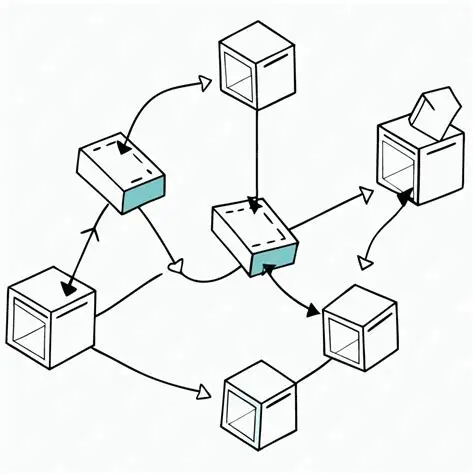

- Estructura de Datos
- Es una colección de datos organizados de una manera específica (lógica y física), junto con el conjunto de operaciones que se pueden realizar sobre ellos (ej. inserción, eliminación, búsqueda).

- Tipos Primitivos
- Son los tipos de datos básicos y atómicos (`int`, `char`, `float`, etc.) que el lenguaje maneja de forma nativa. Ocupan una cantidad de memoria fija y predefinida.